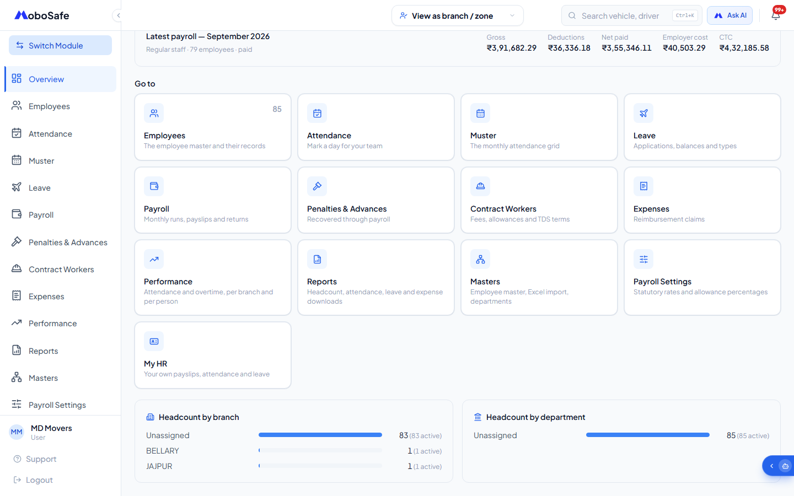

The workspace
कार्यक्षेत्र
0:410:49/employee
Do this
यह कीजिए
- Sign in, then choose Employee Management on the module screen.
- Read the line under the title — that is your live headcount.
- Scan the four tiles: active employees, monthly wage bill, marked today, awaiting action.
- Use the Go to cards or the left sidebar to reach any screen in the module.
- साइन इन कीजिए, फिर module स्क्रीन पर Employee Management चुनिए।
- टाइटल के नीचे की लाइन पढ़िए — यही आपकी मौजूदा headcount है।
- चारों टाइल देखिए: active employees, monthly wage bill, marked today, awaiting action।
- मॉड्यूल की किसी भी स्क्रीन तक पहुँचने के लिए Go to कार्ड या बाईं sidebar इस्तेमाल कीजिए।
What the voiceover says
आवाज़ क्या कहती है
Welcome to Employee Management. Everything about your staff sits behind this one door. The line under the title shows eighty five active employees of eighty five on record. Across the top you get your monthly wage bill, how many people are marked today, and anything awaiting your action. Below that sits the latest payroll, September twenty twenty six, already paid, with gross, deductions, net paid, employer cost and C.T.C. The Go to cards, and the menu down the left, take you to every other part of the module.
Employee Management में आपका स्वागत है। आपके स्टाफ़ से जुड़ी हर चीज़ इसी एक दरवाज़े के पीछे है। टाइटल के नीचे की लाइन बताती है कि रिकॉर्ड पर पचासी में से पचासी कर्मचारी सक्रिय हैं। ऊपर की तरफ़ आपको महीने का वेतन ख़र्च मिलता है, आज कितने लोगों की हाज़िरी लगी है, और वह सब जो आपकी कार्रवाई का इंतज़ार कर रहा है। उसके नीचे सबसे नया payroll है, सितम्बर दो हज़ार छब्बीस, जिसका भुगतान हो चुका है, gross, deductions, net paid, employer cost और सी टी सी के साथ। Go to कार्ड, और बाईं तरफ़ का मेन्यू, आपको मॉड्यूल के बाक़ी हर हिस्से तक ले जाते हैं।
